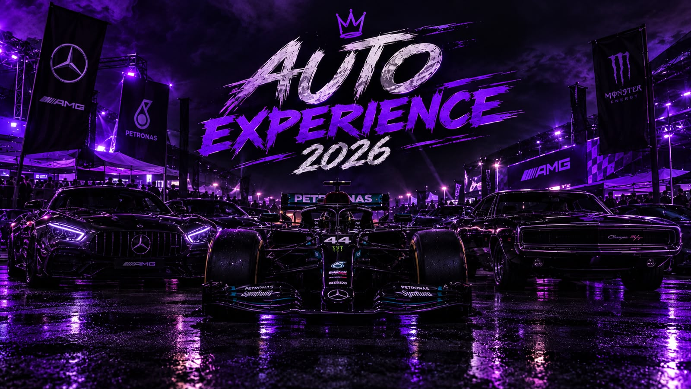

SOBRE O EVENTO
O Auto Experience 2026 é o maior encontro para apaixonados por automobilismo, reunindo desde relíquias clássicas até as máquinas mais velozes da Fórmula 1.
Durante o evento, os visitantes poderão explorar uma área exclusiva de carros undergrounds customizados, assistir a palestras com pilotos e vivenciar a adrenalina de perto.
Informações do evento
DATA
21 e 22 de novembro de 2026
HORÁRIO
09h às 22h
LOCAL
Autódromo de Interlagos
INGRESSOS
R$ 70,00 Normal (Inteira)
R$ 35,00 Normal (Meia)
R$ 150,00 VIP (Acesso aos boxes)
R$ 75,00 VIP (Meia Acesso aos boxes)
PROGRAMAÇÃO
01. Exposição de Carros Clássicos
02. Encontro da Cultura Underground
03. Exibição de Carros de Fórmula 1
04. Palestra: Engenharia Automotiva
05. Track Day Exclusivo
Participe do evento
Garanta sua participação no maior encontro automotivo de 2026.
Garantir ingresso